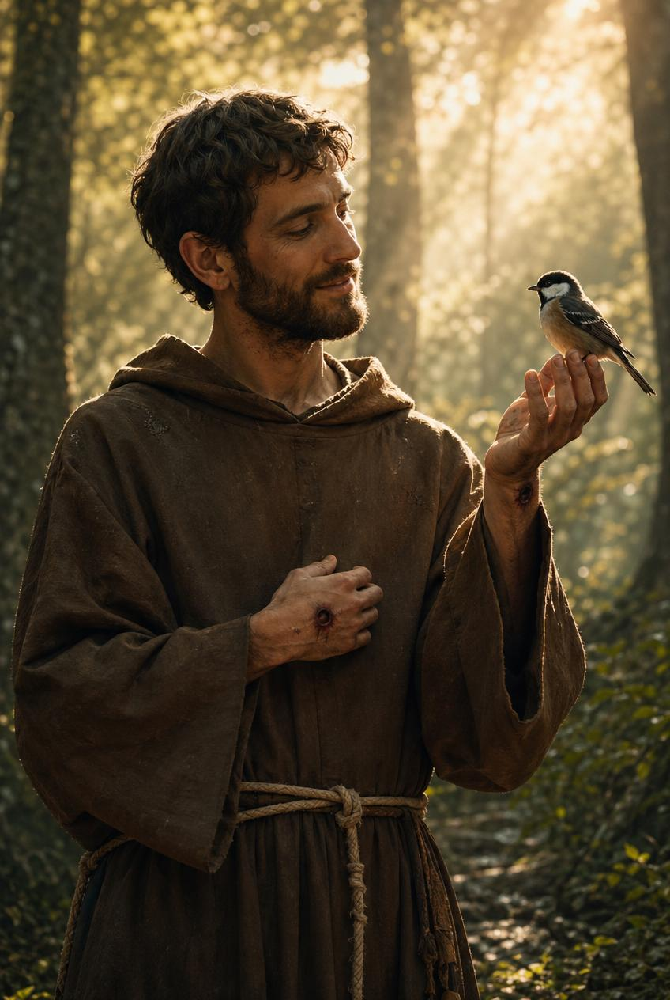

Saint Card Deep Dive · Feast Day: October 4

Patron of Ecology and Animals
Before He Was A Saint
Francis grew up rich. His father was one of the wealthiest merchants in town, and Francis had the finest clothes, the biggest parties, and big dreams of becoming a knight. Then, on purpose, he gave every bit of it away. That's not an accident in this story. It's the whole point of it.
Assisi, Italy · Around 1181
War Changes Everything
Francis got his chance at glory when Assisi went to war with a nearby city. He was captured and spent about a year as a prisoner before coming home sick and shaken. A little later, praying alone in a run-down old church called San Damiano, Francis said he heard Christ speak to him from the crucifix on the wall: "Francis, go and repair my house, which you see is falling into ruin." At first, he thought that simply meant fixing the building, stone by stone.
The Town Square
To pay for repairs at San Damiano, Francis sold some of his father's cloth without asking first. His father was furious, and dragged him in front of the whole town and the local bishop, demanding his money back. Francis didn't argue. He took off every piece of clothing he was wearing, right there in the square, and handed it back. From now on, he said, he had only one Father: the one in heaven.
A Choice, Not an Accident
Francis didn't just lose his money. He chose to stay poor, on purpose, for the rest of his life. He wore a rough brown robe tied with a rope, begged for his food, and talked about poverty like a close friend, one he even nicknamed "Lady Poverty." It sounds strange. But for Francis, owning nothing meant trusting God with everything. Other young men in Assisi noticed, and one by one, they joined him.
A Movement Begins
Pope Innocent III approved Francis's way of life around 1209. Within just a few years, thousands of men and women across Europe wanted to live this way too.
Brother Wolf, Sister Bird?
You may have heard that Francis preached to a flock of birds who sat and listened quietly, or that he talked a fierce wolf into leaving a town called Gubbio alone. Those stories are beautiful, and Christians have told them for hundreds of years. But they were written down long after Francis died, by people who loved him and wanted to capture what he was like. Historians can't prove they happened exactly that way. What we do know for certain: Francis truly believed every living thing, animal, plant, sun, and moon, was a gift from God, worth honoring.
San Damiano · 1224
"Praised be You, my Lord, through Brother Sun, who is the day, and through whom You give us light. Praised be You, my Lord, through Sister Moon and the stars. Praised be You, my Lord, through Brothers Wind and Air, through Sister Water, through Brother Fire."
— adapted from the Canticle of the Sun, written by St. Francis, c. 1224
Sick and nearly blind, Francis wrote this song of praise near the end of his life. It's one of the oldest poems in the Italian language, and it's still prayed today.
Mount La Verna · 1224
Two years before he died, Francis went up a mountain called La Verna to pray and fast for forty days. He said he had a vision there, and afterward, marks appeared on his own hands, feet, and side, in the same places Jesus was wounded on the cross. These marks are called the stigmata, and Francis is the first person in recorded history known to have received them. He wore bandages and kept them hidden for the rest of his life, because he didn't want the attention.
October 3, 1226
Francis died at a small chapel near Assisi called the Porziuncola, asking to be laid on the bare ground one last time, the way he'd lived. He was declared a saint in 1228, remarkably fast even by the Church's standards. His brothers, the Franciscans, still live his way of simplicity today, all over the world. In 2013, a newly elected pope chose the name Francis in his honor, the first pope in history ever to do so.
A Line Often Credited to Him
People have repeated this line for a hundred years and credited it to Francis. Here's the honest truth: there's no record he ever actually said it. It doesn't show up anywhere in his own writings or in the accounts written by people who knew him. Historians think it was written by someone much later, summing up what Francis's whole life was already saying without words: how you live can preach louder than what you say.
Let's Remember Him
The next time you feel the sun or the wind, or see an animal, you can remember Brother Francis, who saw God's fingerprints in every bit of it.